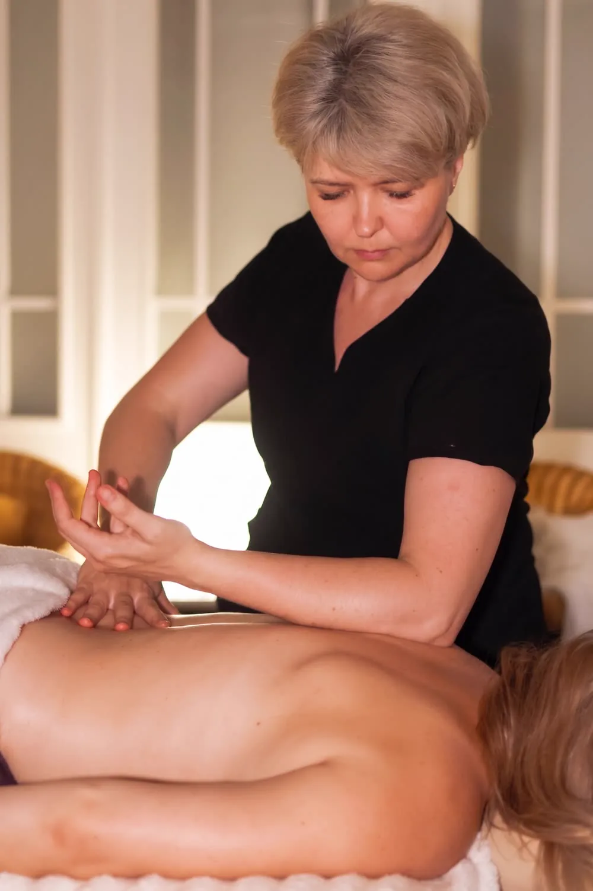

Body massages · Poznań
For tension that has lasted for weeks and comes back to the same place after every relaxation. Slow, precise work on deeper muscles, their attachments and the fascia - without rushing and without fighting the body.

What it is
This distinction shapes the whole treatment. Depth is about the layer we work on - not the force of the pressure. You cannot reach deeper tissue by force: a muscle that tenses up in defence reflexively closes off access. That is why we work slowly, in time with your breathing, and set the pressure so that you can still breathe out calmly.
This massage is also targeted. We do not "go through" the whole body one part after another - we look for the source of the problem, and it often lies somewhere other than where it hurts. Pain between the shoulder blades can come from tension in the chest, and lower back pain from tight hip flexors in someone who sits eight hours a day.
Benefits
When the same spot has been bothering you for months and does not let go after ordinary relaxation.
That "stone" between the shoulder blades in people who work at a computer.
Difficulty turning your head, reaching behind your back or fully straightening the hip.
Calves and the IT band in runners, shoulders in swimmers, forearms with a strong grip.
How the session works
Where it hurts, for how long, what makes it worse, whether there was an injury and whether you are under a specialist.
The therapist examines the area by touch and plans the work - often starting away from the painful spot.
Cross-fibre work, myofascial release and trigger points, in time with your breathing.
We tell you straight whether a series makes sense, and what to do between visits.
Duration and price
The work is slow and cannot be sped up without losing the effect, so the time depends on the number of areas, not on the pressure. One specific spot fits into 40 minutes; the back with the shoulder girdle needs an hour.
Contraindications
Come without alcohol and without painkillers taken just before the visit - they mask pain, and then pressure cannot be set safely. Pain radiating into a limb, numbness or loss of strength needs a doctor or physiotherapist first. More in our guide to deep tissue massage (in Polish).
FAQ
The therapeutic massage works more broadly - on the troublesome area, at a moderate pace. Deep tissue is narrower and slower: we go down to the deeper layers and fascia in one specific place. If the tension eases with ordinary relaxation, a therapeutic massage is enough. If it has been coming back to the same place for months, this treatment makes sense.
You will feel it, but you should not have to grit your teeth. The test is your breathing: if you can breathe out calmly during the pressure, it is well judged. Holding your breath means it is too firm - a muscle tensed in defence will not let go anyway, so harder does not mean more effective.
Tension that has built up over years rarely goes after one session. For a chronic problem we usually plan a series of 3–6 treatments every 1–2 weeks, then maintenance visits every 3–6 weeks. After the first visit we will tell you honestly whether a series makes sense.
40 minutes is enough for one well-defined area - the neck or just the lower back. For the back with the shoulder girdle, an hour is the realistic minimum, because the work is slow and cannot be sped up without losing the effect. 80 and 90 minutes are for several connected areas.
Better to skip hard training that day. Gentle movement and a walk are a good idea. Tenderness similar to muscle soreness can last 24–48 hours - that is expected. Sharp pain or discomfort lasting more than 2–3 days means the stimulus was too strong, and we work more gently next time.
Want to know more before your visit? Read our guide: Deep tissue massage - how it works and who it really helps (in Polish).
Book online · We speak English
Message us on WhatsApp in English, call, or use the booking form - we will confirm your time.
Contact · Booking · We speak English
We use necessary cookies to make the site work. With your consent we would also like to use Google Analytics to see which pages are useful. You can change your choice at any time. Details in our privacy policy (in Polish).
Needed for the site to work and to remember your choice. They cannot be switched off.
Google Analytics - aggregated visit statistics. Off by default.